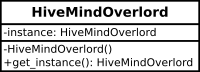

Common Design Patterns in Vala Pt. 1 - The Singleton Pattern
Posted on Tue 09 February 2016 in Vala
Common Design Patterns in Vala
A great deal of creativity is about pattern recognition, and what you need to discern patterns is tons of data. Your mind collects that data by taking note of random details and anomalies easily seen every day: quirks and changes that, eventually, add up to insights.
Margaret Heffernan1
Design Patterns are like templates that you can apply to your program to solve common problems. They are not like normal code samples that you can copy and paste into your program's source and run with little or no modification rather they are more like recipes for how you might structure your program's code.
Just about every piece of software you use today has been written conforming to one set of patterns or another. Everything from how the system allocates memory to how a user chooses an item from a program's menu follow well established, time tested patterns. They are one of the cornerstone's of modern software enginerring best practice.
Not only do patterns help you structure your thinking but they also help you write code that others can more easily read (and contribute to). A program that uses common design patterns is one whose intent is intelligible across language barriers, both human and machine. The more clear the patterns in your code are, the fewer comments you will need to leave and the easier it will be for others to follow.
In an Object Oriented Language like Vala, most patterns are used to show the interactions and behaviour between objects without necessarily specifying which classes or interfaces should be used. Those choices are left to the programmer to make. Design patterns let you see the trees for the forest.
In this series of articles, we are going to look at some of the most common design patterns in use today and how they can be implemented in Vala. We'll start with one of the easiest patterns to learn how to use and identify - the Singleton pattern.
Singletons
The Singleton or Single Instance pattern is one of the simplest and most common design patterns in Object Oriented Programming. It is used to create objects so is often categorised as one of the "Creational" patterns.
A Singleton is a class that is responsible for ensuring there is only ever one instance of itself during runtime and it provides a method to access it without needing to instantiate it.
The most straightforward implementation of this is one that would be familiar to Java programmers. We create a class that has a private constructor and a static instance of itself with a public method to access it.
In UML, the Singlton would look like this.

The Vala implementation looks like this.
public class HiveMindOverlord {
private static HiveMindOverlord instance;
private HiveMindOverlord() {}
public static HiveMindOverlord get_instance() {
if (instance == null)
instance = new HiveMindOverlord();
return instance;
}
private HiveMindOverlord() {}
}
This definition ensures there will only ever be one instance of our HiveMindOverlord and we can get a reference to that through the static method get_instance():
```vala public test_singleton {
// The HiveMindOverlord constructor is private so
// we cannot instantiate one using the new operator
var overlord = HiveMindOverlord.get_instance();
// The get_instance method has returned a valid instance
assert (overlord is HiveMindOverlord);
// You can now do things that one does with an
// instance of our HiveMindOverlord
}```
If you're familiar with another OOP language, you might note that in Vala you can't initialise a static class member without first creating an instance of that class. Hence the get_instance() method checks that the instance variable isn't null and if it is, it creates a new one. This ensures that is only ever one instance created and that it is available from the first call.